我只说了四句话，Astra 让一间教室
经历了四种结局
桌椅慢慢离地，墙面老去，藤蔓爬上黑板，洪水冲进教室。
这些以前让我想到制作成本就放下的念头，这次，我让 Astra 一步步做了出来。
四个想法，说出来只要四句话。把它们变成眼前的画面，中间还得一遍遍看、一遍遍改。
事情一开始，只是想换个光
一开始，我就想看看教室变成黄昏是什么样。看完觉得还挺有意思，又想看看它荒废已久的样子，让桌椅飘起来。最后干脆问了一句，能不能把这里淹了？下面是教室最初的样子。
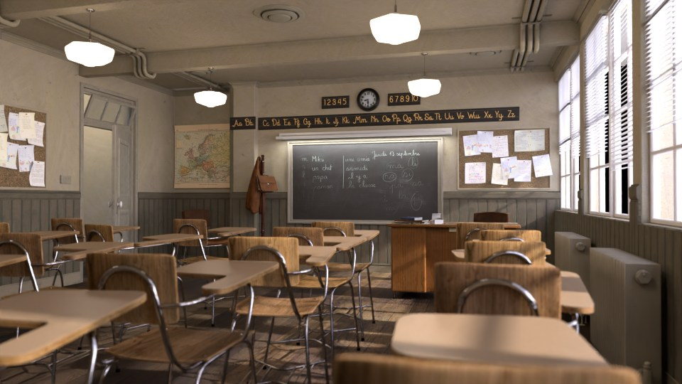
要求，一次比一次离谱
「把下午改成黄昏。」
对话按实际制作过程整理，非逐字记录。
把这个教室弄成黄昏的感觉，暖一点，像快放学了。
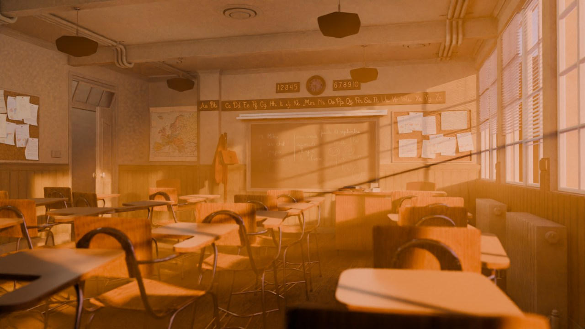
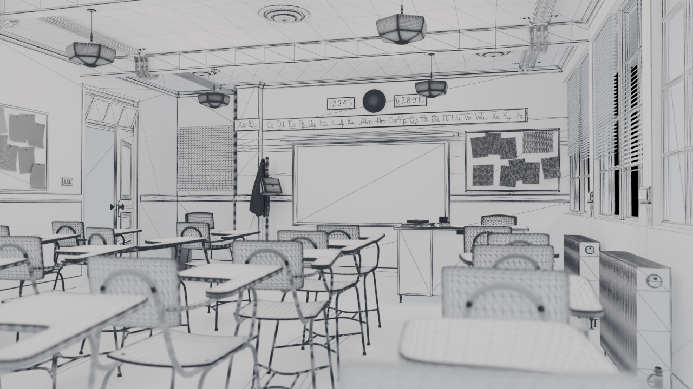
成片 白模 · 布线Astra 把太阳压低，色温调到 2400 K。光穿过百叶窗，在墙面和课桌上留下长长的影子。教室一下有了放学后的感觉。
黄昏看完，我想再往前推一步。如果很久都没人进来，这间教室会变成什么样？
「让这里像很久没人来过。」
再试试荒废已久的样子，破旧一点，长些植物。
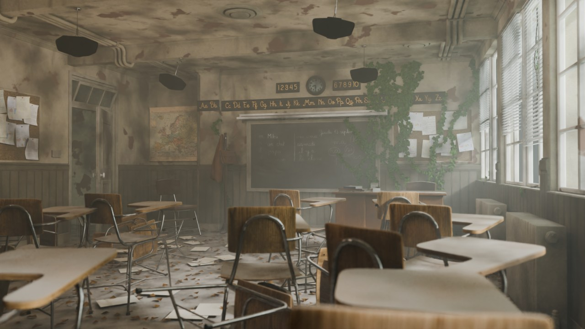
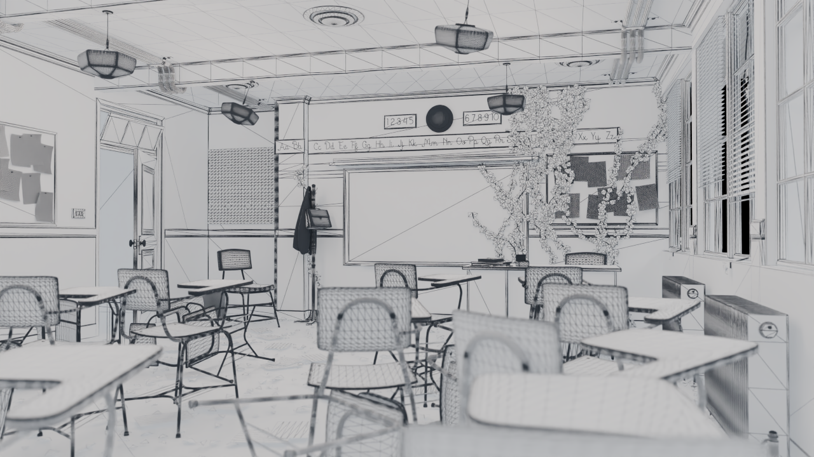
成片 白模 · 布线墙皮褪色，桌椅歪倒，废纸和枯叶堆在角落。换成手工，我光想到要挨个做旧、摆杂物、铺藤蔓，大概就会把这个念头先放一放。
Astra 把原来的荒废效果图作为终点，让积尘、污渍和剥落逐渐加深，桌椅慢慢歪倒，纸张与落叶积起来。藤蔓则由几何节点控制生长和叶片展开，最后回到那片爬上黑板边缘的常春藤。
看着常春藤爬到黑板边上，我开始想试试更不讲道理的画面。
「让桌椅都飘起来。」
让桌椅都飘起来，像没有重力一样。
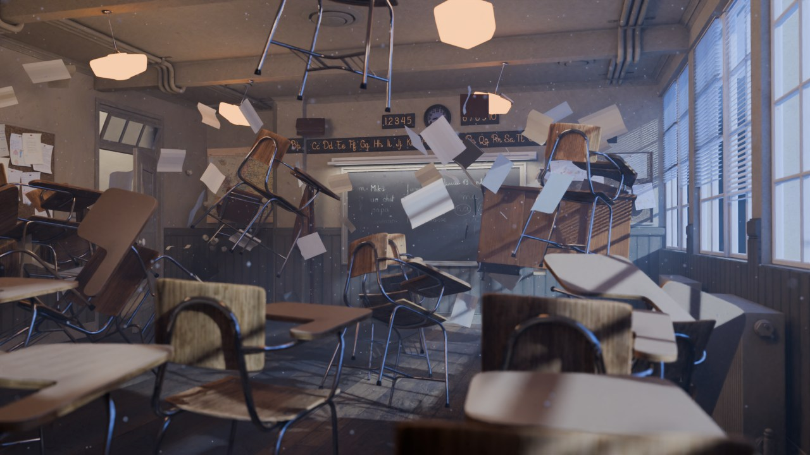
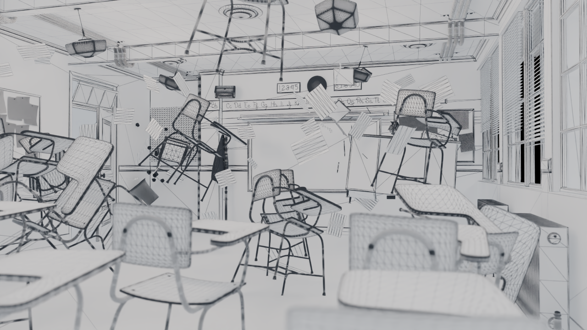
成片 白模 · 布线课桌和椅子错开时间离开地面，纸张随后飘起来。升起以后，物体仍然有轻微的旋转和漂移，教室像突然失去了重力。
Astra 沿用静态构图中的视线安排，让镜头前的几张桌椅留在原处，再给后排物体分配不同的起飞时间、高度和旋转幅度。先看低清动画，确认运动节奏，再决定哪里需要继续调整。
「把教室淹了。」
能不能把教室淹了？水从窗户冲进来，做成一小段动画。
Astra可以试试。我先让水从窗边冲进来，镜头跟着往前走。先看水的效果，再慢慢调。
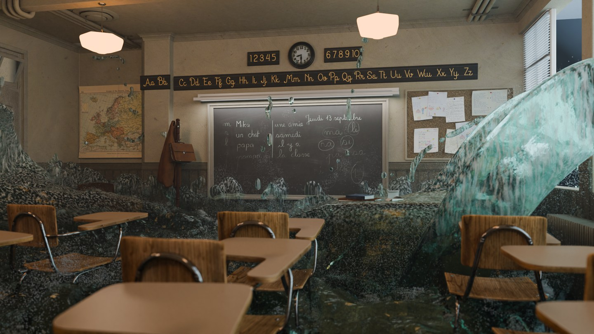
这次，光靠调整摆放已经不够了。水要从窗口涌进来，穿过课桌，掀起浪花；镜头往前推进时，还要能看清教室。
Astra 在 Blender 里搭建流体域，从窗边放水，让水绕过课桌，在桌腿之间拍出浪花。再加上飞沫粒子，调整相机推进的节奏，让视线跟着水往教室深处走。精修版一次流体解算约 25 分钟。
如果每个临时冒出的想法，都要先为这套流程排出时间，很多尝试可能就停在脑子里了。这次，我可以先把要求说出来，再根据跑出来的结果决定下一步。
洪水也曾变成一场「暴雪」
加上粒子以后，水花是有了，却密得像在下雪。屏幕里到处都是白点，水流本身反而看不清了。
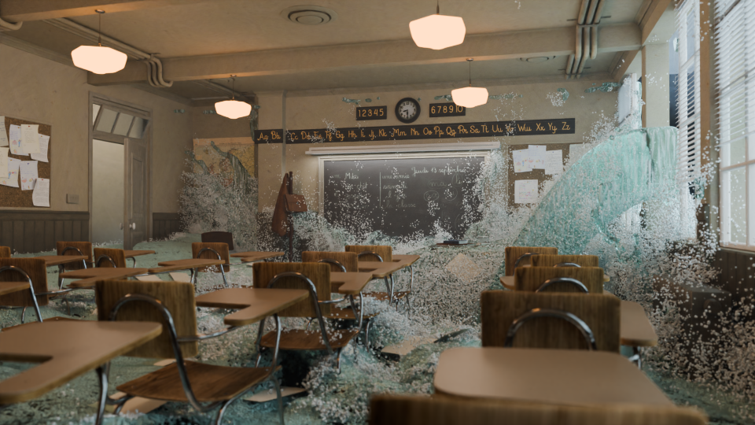
这个水花怎么像下雪了，能不能自然一点？
确实有点像下雪了。我把泡沫减掉，水滴也缩小一点，再出一版看看。
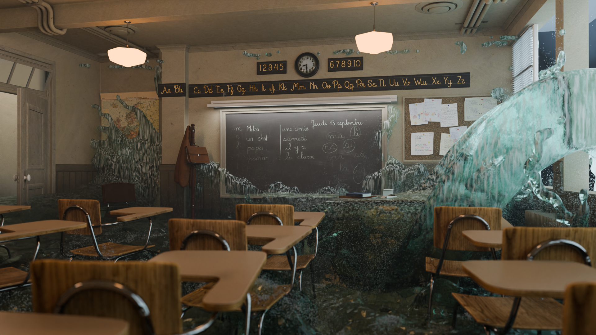
Astra 调整粒子显示、液滴大小和材质，再渲染检查；入水、浪的高度和镜头也经过多轮调整。
我不用先说清每一个参数，只要看着结果指出哪里感觉不对。想法可以先说个大概，细节随着画面一点点补上。
最后一步，
交给 Renderbus CLI
水面、飞沫和运镜调到满意后，我们用 Renderbus CLI 把 96 帧提交到云渲染农场。第一轮出图缺了几张贴图，补齐后重新渲染，再下载帧序列，合成了预告中那段洪水的完整四秒 1080p 镜头。
根据失重任务的真实命令、查询结果与下载文件整理；对话为编辑重述，非逐字聊天记录或原始实时录屏。9 / 96 与 96 / 96 是两次真实查询快照，中间等待已省略。末尾视频为该任务的实际成片。
展开洪水任务的原始 CLI 记录
flood_farm.blend · 1920 × 1080 · 1–96 帧
首次提交流程停在上传阶段，错误节选：
E_DAEMON_UNREACHABLE: submit pipeline stopped at stage upload
… to resume: rft submit --task-id 240500631沿用已有任务继续提交；命令按 CMD 格式整理：
C:\> rft --zone gpu75 submit ^
--task-id 240500631 ^
--yes第一轮出图仍有贴图缺失。补齐资产、重渲后，再查询任务：
C:\> rft --json --zone gpu75 task get 240500631结果为 2026 年 11 月 11 日核验后的摘要，不是实时终端。完整帧序列已下载，并抽查第 1、48、96 帧日志。
›_ 两段动画，也交给农场 真实提交记录 · 2026 年 11 月 12 日
桌椅失重和逐渐荒废都做成了 96 帧动画，再用同样的 CLI 流程提交到 Renderbus，渲染 1080p 帧序列。
分析并打包资产后，沿用已有任务号提交。以下命令按 CMD 格式整理：
C:\> rft --zone gpu75 submit --task-id 240536419 --yes
C:\> rft --zone gpu75 submit --task-id 240536491 --yes
C:\> rft --json --zone gpu75 task get 240536419
C:\> rft --json --zone gpu75 task get 240536491失重任务 240536419、荒废任务 240536491 均已完成 96 / 96 帧，失败帧为 0。两个任务使用 Blender 5.1.1，输出分辨率为 1920 × 1080。
两套帧序列已完整下载并检查文件可读性，抽查首帧、中间帧与末帧。上文独立动画和开头预告已替换为农场成片，制作步骤回放保留当时的工作预览。查看带时间的核验摘要
三个构思，三份真实交付
开头的画面，在这里完成。
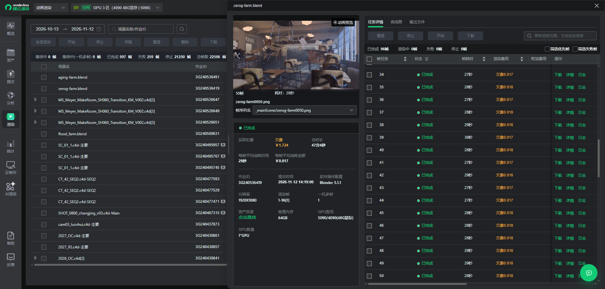
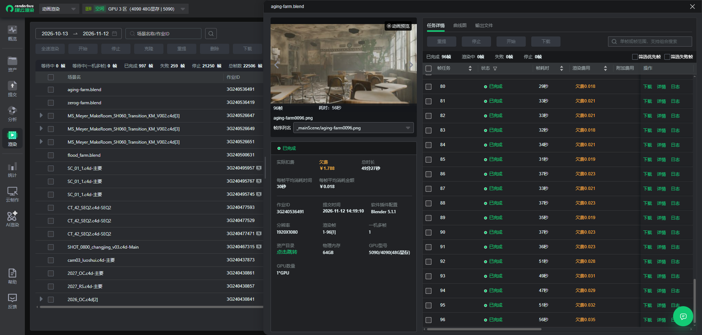
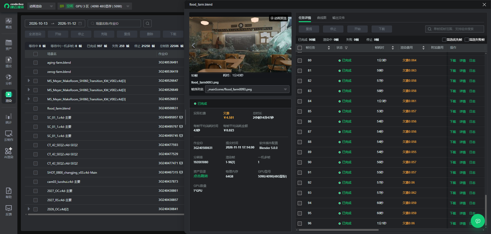
彩蛋 · 教室还有下一种可能
如果这间教室在太空里呢？
后来，这间教室又被改成了一间轨道实验室。最开始是偏霓虹的灯光和轨道示意屏，继续调整后，金属墙板、桌面终端和讲台上的天体仪，让它更像一个可以上课的空间站。
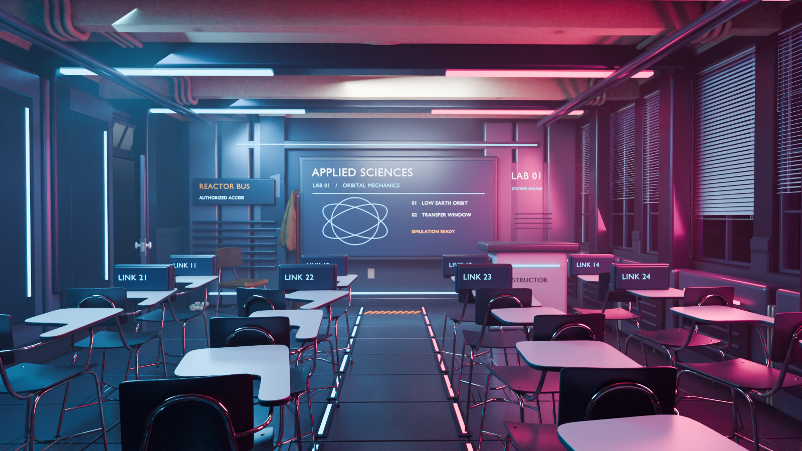
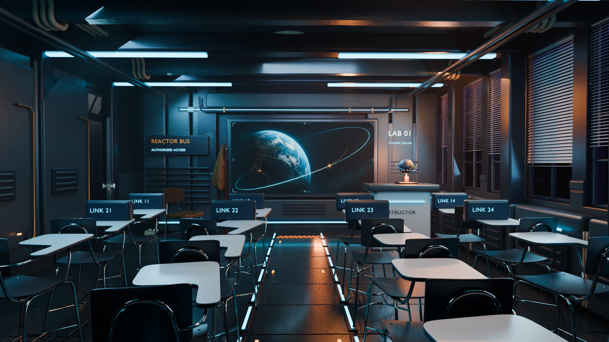
同一个起点，可以沿着不同的想法继续往下做。不用等到所有细节都想清楚，先试一版，再决定下一步。
你想让 Astra 下一次实现什么构思？